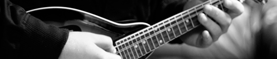

Ungvary Custom Telecaster, Tone King Metropolitan Head + 2x12" Cabinet
phonetics
alternative-rock This is my first band. My best friends Alexander Cee and Stefan Wehner founded a band in 1994, which
I joined one year later. Singers, bass players and the band name changed a couple of times until we met Till
Krause and Michael Kerth in 1998. We wrote and recorded songs and played gigs all over Germany. Definitely the
best time of my life.
phonetics - goodbye columbus (live)
ladia
pop-soul What started years ago as a singer-songwriter duo is now a nice pop-soul band with 4 members. In this
band I mostly play the guitar and sometimes a stage piano. The style I‘m playing here is completely different to
what I‘ve done before.
ladia.de
youtube.com/ladiamusic
soundcloud.com/ladiamusic
flickr.com/ladiamusic
lapin meta
indie-pop This was a very nice project which I did together with Till Krause the former singer of phonetics
in 2005. It was really fun and I learned so much at this time. Knowing we would never play our songs
live on stage, we decided to give our album „Silence, a great luxury“ away for free.
belvedere
alternative-rock Basically the members of phonetics but without Till Krause. The style slightly changed.